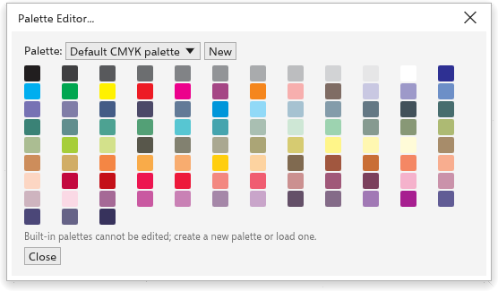

调色板
窗口底部的调色板是为对象着色最快捷的方式。它下方的 文档调色板 收集绘图中使用的颜色。你可以打开更多调色板，创建自己的调色板并编辑它们。
使用调色板
| 操作 | 结果 |
|---|---|
| 单击颜色 | 填充所选对象（未选择任何对象时，设置新对象的填充） |
| 右键单击颜色 | 为所选对象的轮廓着色 |
| Ctrl+单击颜色 | 将该颜色的十分之一混入所选对象的填充 |
| 单击并按住颜色 | 显示该颜色更浅、更深、更暗淡和更鲜艳的色调供选择 |
| 将颜色拖到对象上 | 填充对象，放在边缘上时则为其轮廓着色 |
| 单击带叉的色井 | 删除填充（右键单击：删除轮廓） |
两端的箭头滚动调色板，右端的按钮一次显示所有颜色。将指针悬停在颜色上可查看其名称和数值。左端的调色板菜单按钮打开调色板菜单。
调色板可以移到窗口的另一条边，或设为浮动：拖动其虚线手柄即可。
文档调色板
你应用到对象的每种颜色都会加入文档调色板，它随绘图一起保存。它的滴管添加指针下的颜色，其菜单中有 自动更新（关闭后不再自动添加颜色）、从选定内容添加、从文档添加、删除颜色 和 重置调色板（只保留绘图仍在使用的颜色）。你也可以将颜色或对象拖到它上面。要显示或隐藏它，请参阅 自定义选项。
调色板面板
调色板 面板列出你拥有的调色板以及每个调色板中的颜色数。使用 窗口 > 调色板 > 调色板管理器 打开它。

- 勾选一个调色板即可在绘图窗口下方显示它。
- 编辑 在调色板编辑器中打开它。
- 打开调色板 打开调色板文件（
.tdpal、.gpl、.ase或.aco）。 - 从文档创建调色板 和 从选定对象创建调色板 用绘图或所选对象中使用的颜色创建调色板。
- 文档调色板的颜色显示在底部；单击其中一种可填充所选对象，右键单击可为轮廓着色。
编辑调色板
窗口 > 调色板 > 调色板编辑器 打开调色板编辑器。

- 选择要编辑的 调色板，或单击 新建 新建一个。
- 输入其 名称。
- 单击颜色将其选中；添加颜色 添加当前颜色，移除颜色 删除所选颜色。
- 单击 保存调色板 将其保存为文件。
- 单击 关闭。
内置调色板无法编辑；请新建调色板，或编辑其副本。